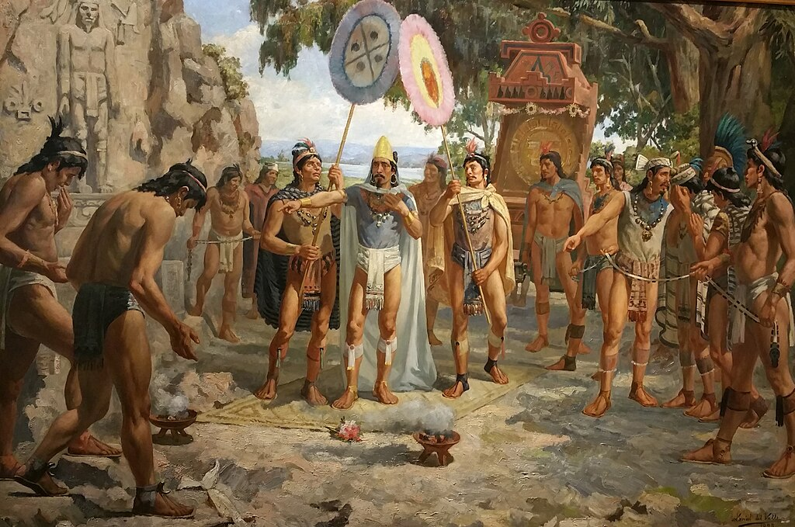
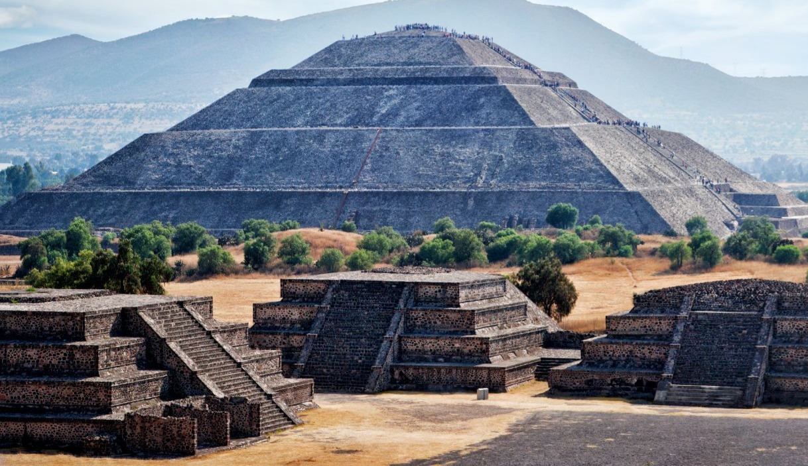

Élőhelyük
Az aztékok mezoamerikai indiánok, akik a mai Mexikó középső és déli részén az amerikai kontinens egyik legkiterjedtebb bennszülött civilizációját hozták létre a 14–15. században, a Mexikói-öböl és a Csendes-óceán között.
Birodalmukat katonai hatalomra alapították. Magukat mexikáknak nevezték, a legenda egyik változata szerint Vitzilopocstli, a törzs főistenének, és egyúttal a harcosok patrónusának utasítására. Az "azték" név a monda szerinti előző hazájukra, Aztlánra utal.
Azték társadalom
A 15–16. századra az aztékok egy hatalmas, despotikus államot hoztak létre, jelentős katonai erővel.
A mai Közép-Mexikó szinte minden népét leigázták, így végül 4-5000 kisebb adófizető állam fölött uralkodtak.
Ezeket ők látták el nyersanyaggal és különböző árucikkekkel.
A harc lételemük volt.
Minden felnőtt férfi számára kötelező volt a hadba vonulás, a fiúgyermekeket pedig már ötéves koruktól katonai iskolákban nevelték.
Vallás
Az aztékoknak - a hódító beállítottságú rómaiakhoz hasonlóan - rengeteg istenük és istennőjük volt, akiket mind egy vagy több tevékenységhez, illetve természeti jelenséghez kapcsoltak.
Hitük szerint a bőséges termés, a katonai siker, az egyéni boldogulás, egyszóval életük minden elképzelhető eleme egy-egy megfelelő isten kegyétől függött.
Társadalmi fejlődésük során isteneik panteonja egyre gyarapodott: mivel gyakran a meghódított területek vallási kultuszait is beolvasztották a magukéba, számos isten szinte ugyanazt a feladatot látta el.
Az istenek szövevényes viszonyban álltak egymással az általuk patronált jelenségek, "felügyelt" dolgok, vagy rokonság alapján. Sok isten a földművelés valamilyen ágának felelőse, védelmezője volt, mivel ez volt az aztékok megélhetésének alapja.
Gazdaság
Amikor nem háborúztak, szorgalmas földművelő életet éltek. Mint kiváló mezőgazdászok, öntöztek, mocsarakat csapoltak le.
A Teskoko-tó körül teraszosan kialakított földeken kukoricát, zöldségfélét és gyapotot termesztettek; tőlük „örökölte” a világ a pulykát, de ők maguk megették a kutyahúst is.
Hogy növeljék az élelmiszerellátást, a tavak vizeiben úszó kerteket (csinampákat) építettek.
Ezt a földművelési módszert ma is alkalmazzák Xochimilco körül, Mexikóváros közelében, de ma már főképpen csak virágtermesztésre.